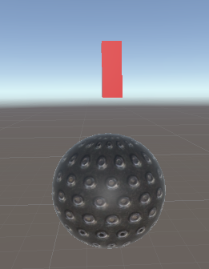
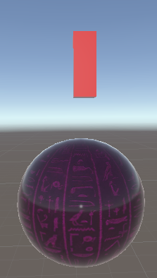
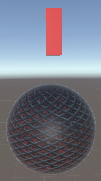

The "Big Boy" is a stronger but slower clanker than the other clankers .

The "Ranger" is a low health clanker that shoots projectiles at the player, but it cannot move.

The normal clanker is a melee enemy that moves a little bit faster than the "Big Boy".